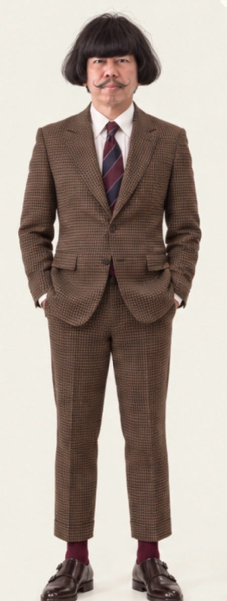
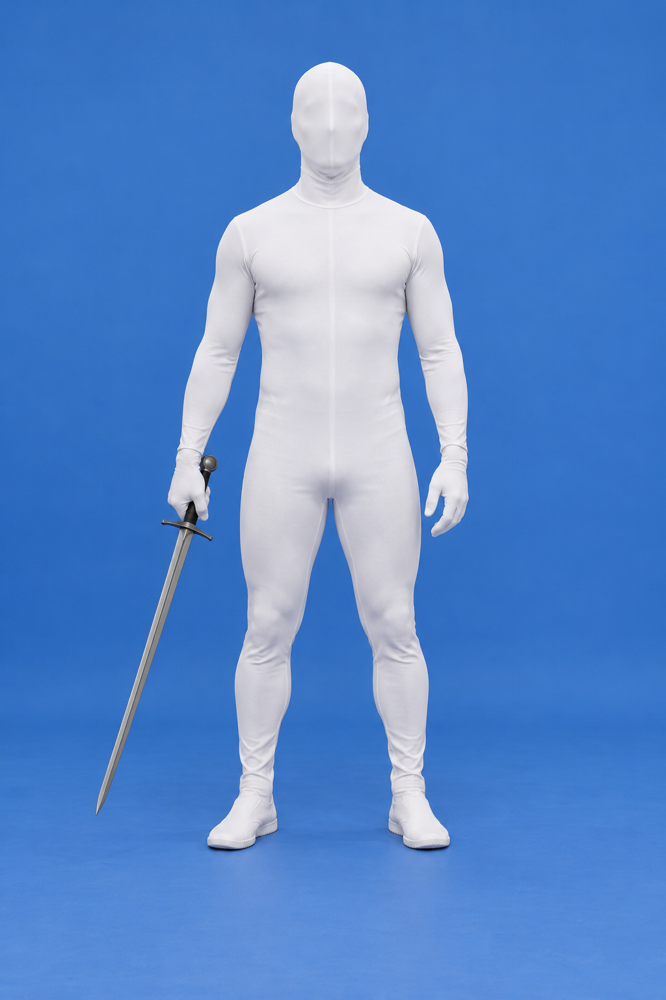
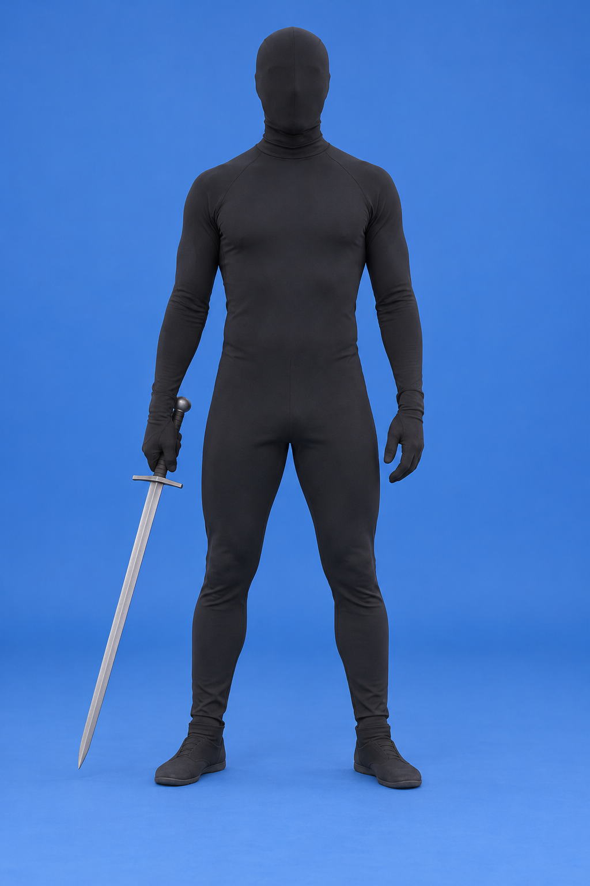
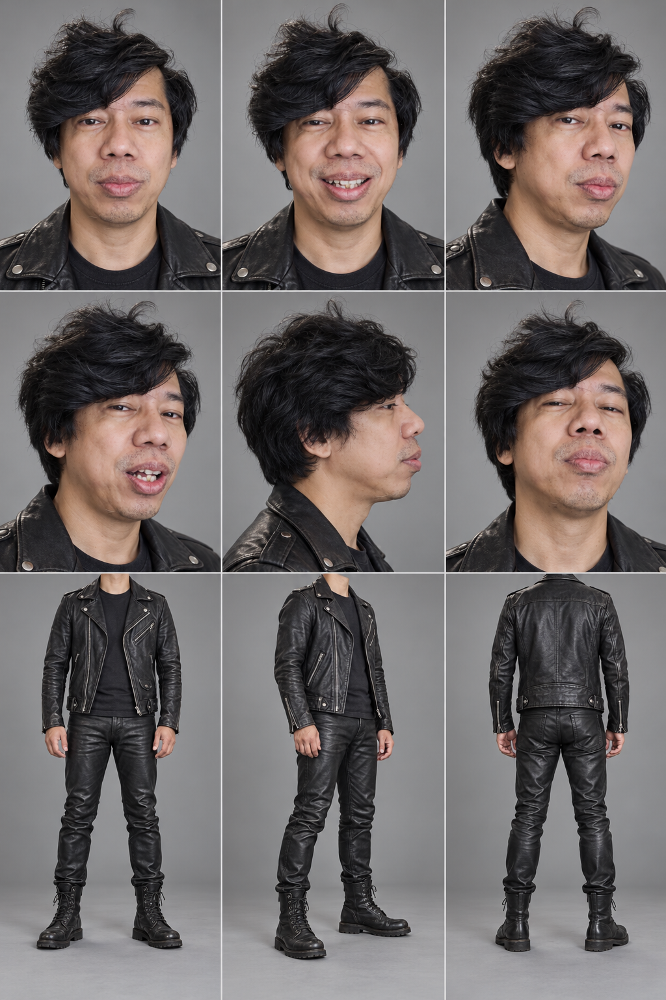
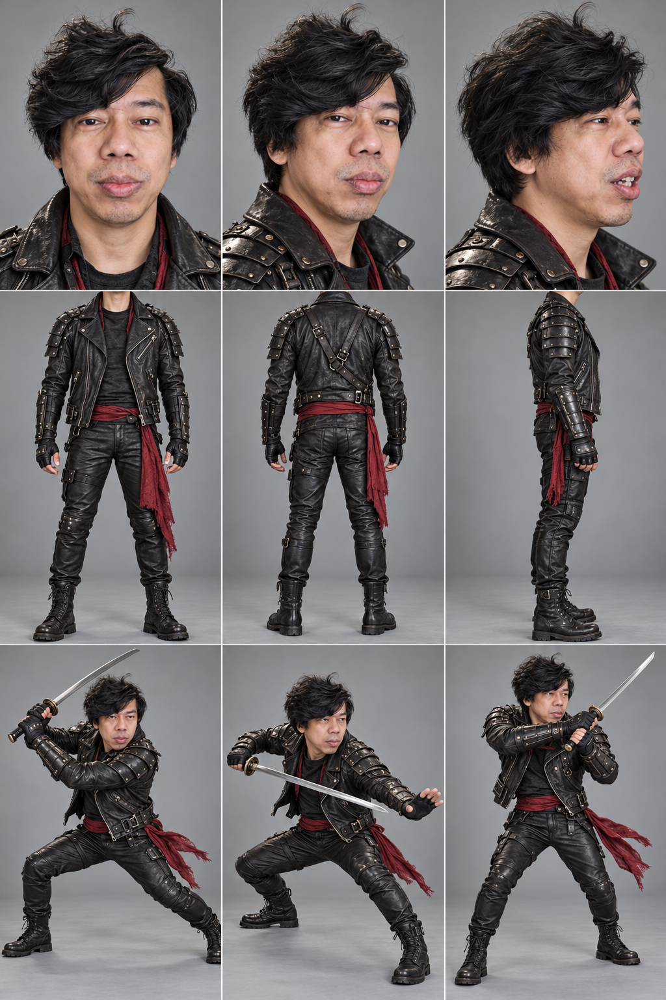
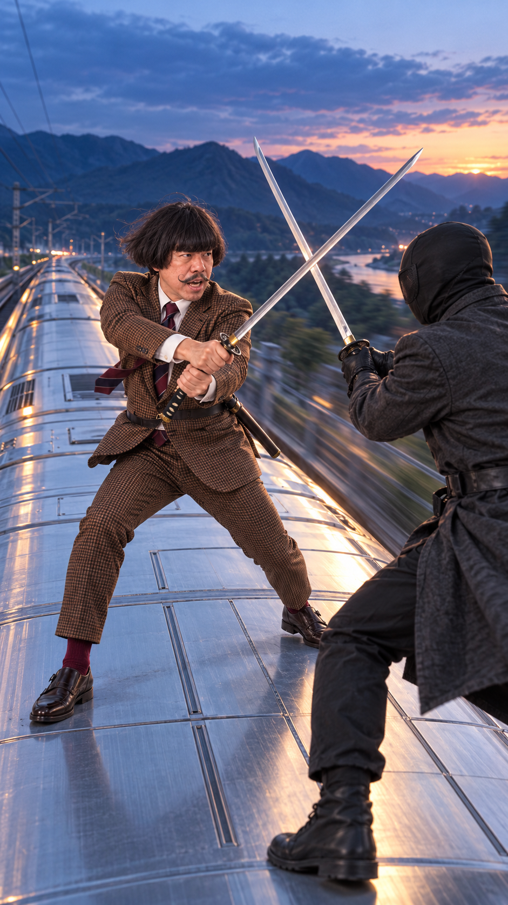

Facial performance
Mouth, jaw, eyes, brows, head attitude and emotional timing from Maung’s studio recording.
Must not bring the selfie lens, room, body pose or source scale.Performance retargeting field notes · October 2026
A practical attempt to take one actor’s recorded facial dialogue, another performer’s stunt motion, a third character’s identity and wardrobe, an independent location, and a newly directed camera—and make them coexist in one generated shot.
Hero videos are muted. Full clips below include the original synchronized audio.
The actual problem
A normal “character replacement” keeps the source shot and changes the person. This project asks for something harder: preserve selected performance signals while replacing the pose, body action, framing, camera, wardrobe and world.
Reference ledger




Two attack paths
We did not assume one control representation would solve every part of the shot. The direct branch asks H3 to interpret independent references. The 3D branch converts stunt and face signals into a camera-directable actor before returning to H3 for appearance synthesis.
Lane 1 · Direct H3
Lane 2 · Reconstruct + direct
FLAME status: the Python implementation and dependencies are staged, but the official licensed model is not redistributed. The working Test 004 face path is MediaPipe-to-MHR through ComfyUI’s native SAM 3D Body integration.
Experiment log
Use the paired controls to replay a comparison together. Audio is authoritative but only one clip should be unmuted at a time.
Partial facial transfer
All variants successfully discarded the source room, chair and selfie framing. Audio alone already drove strong lip synchronization, so “the mouth moves” was not enough evidence that the source face video controlled the result.
Promising chain, confounded staging
This test did achieve a useful cross-identity chain: Maung's recorded facial performance became a target-identity talking performance, which then drove the bowl-cut character in the train action shot. The final action stage used a precomposed fight image, so it is valid evidence for the performance-transplant sequence but not proof that H3 independently composed identity, action, location and camera.


Architecture validated
This is the real stress test. No composed fight still enters either final graph. The direct version favors action. The reconstructed/Blender-guided version favors camera control, stable proportions and mouth timing.
The white actor is detected in all 90 frames, but crossing swords and bodies erase portions of the segmentation. A better capture would record the stunt performer alone and introduce the opponent only at synthesis time.
SAM 3D Body reconstructs people—not the sword—so props need their own tracking or Blender rig.
Diagnostic geometry—not a perceptual quality score.
Caveats and gotchas
Exact audio alone can create plausible mouth motion. A visual performance reference must outperform an audio-only control on timing, eyes, brows or head attitude.
A beautiful precomposed first frame makes generation easier while defeating the purpose of independently combining authorities.
Removing the room and torso prevents shot leakage. Each additional generative normalization pass can erase subtle eye and brow motion.
The MHR mesh is valuable because it lets us rephotograph the performance. H3 still provides identity, clothing, environment and cinematic texture.
Two fighters in one extraction plate create missing limbs and unstable poses. Capture the controlled performer alone whenever possible.
Human reconstruction does not recover sword geometry. A production pipeline needs rigid prop tracking, a Blender prop rig, or a separate semantic reference.
The direct route delivered better combat; the 3D route delivered better direction and visemes. A hybrid pipeline should choose the strongest representation per signal.
Correlations catch timing changes, but camera rotation, face visibility and identity shifts can distort geometry. Continuous visual QC remains mandatory.
Reproducibility
MiniMaxH3ReferencePack
MiniMaxH3ReferenceToVideo
MiniMaxH3NativeAudioLock
SAM3DBody_Predict
SAM3DBody_FaceExpression
SAM3DBody_Smooth
BuildPoseFile → SaveGLB
<Picture 1> = target face identity only
<Picture 2> = target body proportions and checked suit only
<Picture 3> = empty moving-train roof, location and lighting only
<Picture 4> = separate black-suit opponent
<Video 1> = Maung's facial dialogue performance; never copy its studio framing
<Video 2> = reconstructed 3D body action and front-to-side camera guide only
<Audio 1> = authoritative dialogue timing and soundtrack
Create a cinematic wide full-body train-roof fight. Retarget the dialogue
performance onto the different body action and independent camera. Preserve
normal adult anatomy and head scale. Do not use a static starting composition,
do not paste or enlarge a face, and do not recreate the studio framing.Executed locally across two RTX 3090 workers and CPU preprocessing. The project preserves prompts, graph payloads, manifests, hashes and scripts; generated media is embedded here for review.
Project repository · Meta SAM 3D · Comfy SAM 3D Body checkpoint · FLAME · FLAME license · Blender